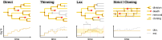

Simulation Algorithms
Estimating the growth rate of a growing population of cells directly is difficult: since the number of cells will typically grow exponentially, obtaining reliable estimates has exponential complexity. Chemostats.jl bypasses this by using population control algorithms that only simulate a subset of the population, while still being able to extrapolate the expected number of cells with good accuracy.
All of these algorithms will terminate if the population dies out, as they cannot estimate growth rates in that case. In this case, simulations will have to be restarted. Chemostats.Thin and Chemostats.Lax both increase the probability of extinction, depending on parameter settings.
Chemostats.jl simulates cells independently of each other - direct cell-to-cell interactions are currently not supported. Except for Chemostats.Strict, all algorithms below support parallelisation.

Supported algorithms
Chemostats.Direct — Function
Direct()Simulates an entire population. The standard approach. Slow. If the population grows with rate $Λ$, simulating it for time $t$ will take $e^{Λt}$ computational effort, while providing accuracy that only scales as $1 / t$.
Note: This algorithm is implemented as an alias of Thin(0).
Chemostats.Thin — Type
Thin(δ::Float64)Simulates a population where each cell is subject to a constant death rate $δ > 0$. If the original population grows with rate $Λ$, the simulated population grows with rate $Λ - δ$, from which $Λ$ can be estimated.
Faster than Direct, but still slow.
Note: This algorithm increases the chances that the population will die out. To reduce the chances of this happening, increase the starting size of the population.
This algorithm requires $δ < Λ$ to be stable, otherwise the population will eventually die out. This approach has exponential complexity with rate $0 < Λ - δ < Λ$.
Chemostats.Strict — Type
Strict(L::Int)Implements the cloning algorithm of Giardinà et al. (2006) and Lecomte & Tailleur (2007). Simulates a population of exactly $L$ cells. When a cell divides in two, one of the resulting $L+1$ cells is discarded at random; when a cell dies, another is cloned into its place.
Since the population size is kept constant, it has stable simulation times. Introduces an error of order $1 / L$ into growth rate estimates. For many problems, $L = 10-100$ should be enough to obtain good estimates. For $L \geq 100$ we recommend Lax instead.
Note: This algorithm does not support parallelisation.
Chemostats.Lax — Type
Lax(L::Int, τ::Float64; tol = 2, β = 0.5)Implements the relaxed chemostat algorithm, combining Thin and Strict. The population is kept around $L$ by introducing a time-varying death rate $δ$ that is adapted to the current growth rate. The death rate is updated at intervals of length $τ$.
This algorithm trades the strict population size guarantees of Strict for better parallelisation. As the population size is only approximately $L$, runtimes may be somewhat less stable than Strict. In particular, if the population size hits $0$ within an interval $τ$, the population dies out. To reduce the chances of this happening, increase $L$ or decrease $τ$. We recommend $L \geq 50-100$.
This algorithm determines $δ$ on the fly by estimating the instantaneous growth rate of the population as
$\hat Λ_n = \sum_{i=0}^\infty \frac {β^i} {1 - β} \hat \Lambda(t_{n-i-1}, t_{n-i})$
and requiring the expected population size after the next interval to equal $L$. Here
$\hat \Lambda(t_{n-i-1}, t_{n-i}) = \frac{\log \hat N(t_{n-i}) - \log \hat N(t_{n-i-1})}{\tau}$
is the growth rate in the n-ith interval. The parameter $0 \leq β \leq 1$ controls smoothing: Larger $β$ produces more stable estimates, but does not capture sudden variations in growth rate, whereas smaller $β$ produces less stable estimates that can better adapt to fast fluctuations. If $β = 0$, only the growth rate in the last interval is used.
Chemostats.Forward — Type
Forward(L::Int)Simulated $L$ independent lineages. When a cell divides, it is replaced by one of its daughter cells. Does not currently support cell death. This algorithm is not equivalent to Strict, except in the case $L = 1$.
Note: This algorithm does not allow estimation of growth rates.